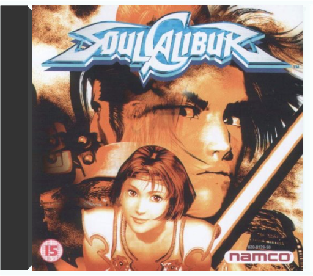
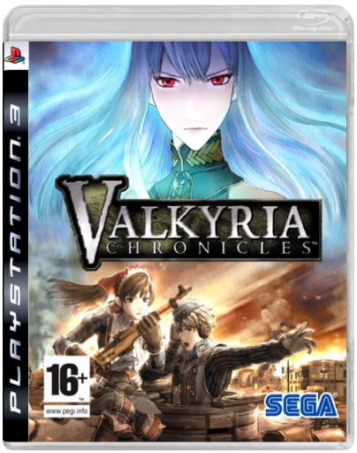
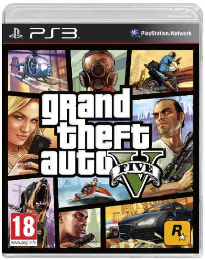
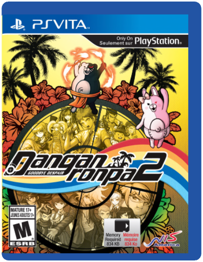
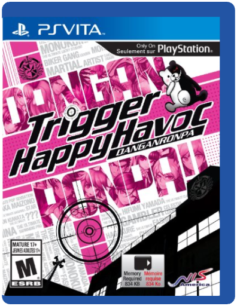

SoulCaliburSega  One of the best fighting games ever, Soul Calibur not only offers you a fantastic plethora of fighting moves, characters and action, but also the chance to bury your PlayStation friends into the ground with its oozing graphics. Valkyria ChroniclesSega Valkyria Chronicles is set in a fictitious continent reminiscent of 1930s, Europe divided in two and ruled by the Empire and the Federation. The Empire has set its sights on invading a small neutral country called Gallia, which is situated in the middle of the two great empires. The game follows a hero named Welkin and his fellow soldiers of the Federation's 7th Platoon that are fighting against the Empire, who is intent on unifying the continent under its power. The Federation discovers that the Empire possesses a secret weapon, known as the "Valkyria"- an ancient race with special powers thought to exist only in legends. With this new discovery, the fate of the Federation's ability to win the war and a hope for a better future hangs in the balance. 'CANVAS' graphics system produces stunning visuals. A beautiful and distinctive artwork style gives the appearance of a watercolour painting in motion.'BLiTZ' Tactical Battle System. Strategically maneuver your units on the battlefield, then drop down and use real-time controls to dictate the action.Character and platoon customisation. Choose from over 50 characters to create your own personally designed platoon. Grand Theft Auto VRockstar Grand Theft Auto V Los Santos: a sprawling sun-soaked metropolis full of self-help gurus, starlets, and fading celebrities, once the envy of the Western world, now struggling to stay afloat in an era of economic uncertainty and cheap reality TV. Amidst the turmoil, three very different criminals plot their own chances of survival and success: Franklin, a former street gangster, now looking for real opportunities and serious money; Michael, a professional ex-con whose retirement is a lot less rosy than he hoped it would be; and Trevor, a violent maniac driven by the next big score. Running out of options, the crew risks everything in a series of daring and dangerous heists that could set them up for life. The biggest, most dynamic and most diverse open world ever created, Grand Theft Auto V blends storytelling and gameplay in new ways as players repeatedly jump in and out of the lives of the game's three lead characters, playing all sides of the game's interwoven story. All the classic hallmarks of the groundbreaking series return, including incredible attention to detail and Grand Theft Auto's darkly humorous take on modern culture, alongside a brand new and ambitious approach to open world multiplayer. Developed by series creators Rockstar North, Grand Theft Auto V will be available worldwide for Xbox 360 and PlayStation 3 on September 17. Danganronpa 2: Goodbye Despair - PlayStation VitaNIS America Danganronpa 2: Goodbye Despair, the sequel to the highly popular mystery adventure game Danganronpa: Trigger Happy Havoc, will be making its way to the PlayStation Vita in North America and Europe this fall in both retail and digital form. As in the first game, players will take on the role of a high school student as they are thrust into a life-or-death situation, and must use their wits and teamwork to survive. Each student was chosen for a special ability they possess, making them the "ultimate" example of something. Characters in this title are also designed by Rui Komatsuzaki for a unique and darker take on the anime style. DanganRonpa: Trigger Happy Havoc - PlayStation VitaNIS America DanganRonpa: Trigger Happy Havoc is a revised and revamped edition of a title originally released on the PlayStation Portable in Japan in 2010. You'll take on the role of Makoto Naegi, a desperately average teenager who somehow finds himself accepted into Hope's Peak Academy, a prestigious high school normally reserved for the nation's" ultimate" students. But when he arrives, he and the other students soon find themselves trapped in a battle for survival against a twisted mastermind who has taken them all prisoner. You'll have to unmask the villain and uncover the secret of the school, or die trying.  Animal Crossing: New LeafNintendo Animal Crossing: New LeafNintendo Welcome to Animal Crossing where, as mayor of your own town, you make the decisions that shape your town and your life. Experience a living, breathing world where new friends and new discoveries await every day, morning, noon, and night. Express yourself by customizing your character, your house, and your town as you create your own ideal world.  Beat The Beat: Rhythm ParadiseNintendo Beat The Beat: Rhythm ParadiseNintendo From playing golf with mandrill to controlling a flowerpot-punching karate man, everything has to be done in time to the beat to win. Try not to let the craziness occurring on screen distract you from the music because it is keeping the rhythm that counts. If you do stop to look at what’s going on then you won’t be disappointed, as each of the 50 rhythm games has their own short story featuring the classic Rhythm Paradise humour In a European exclusive, fans will also be able to switch between the Japanese and English soundtracks covering many musical styles. |


 Made with Delicious Library
Made with Delicious LibraryFlinders, NSW zipflap congrotus delicious library Powell, Rhys